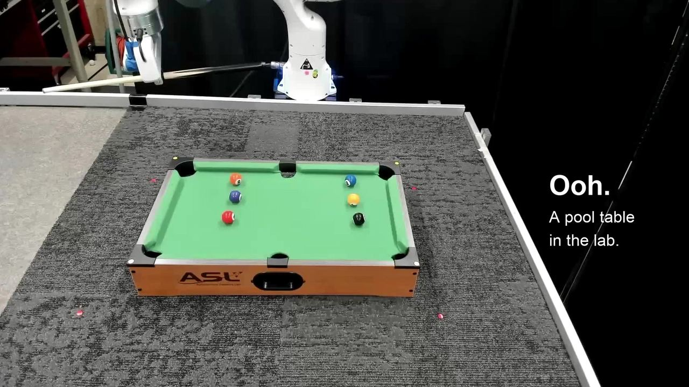
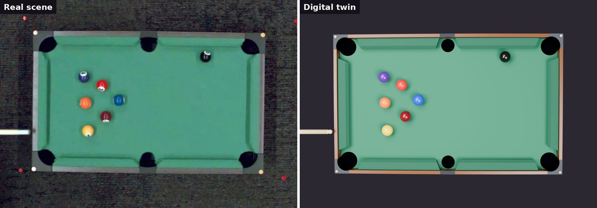
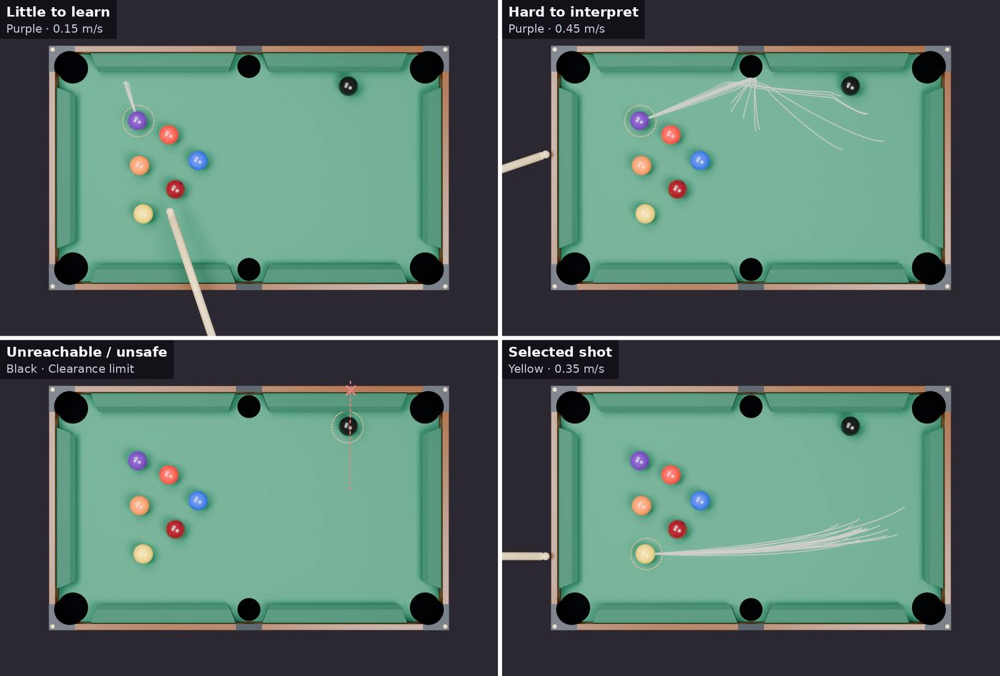
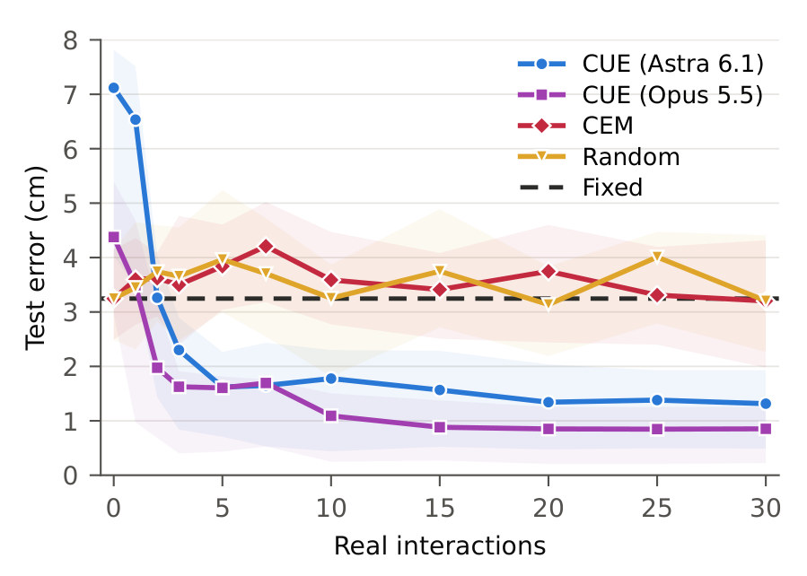
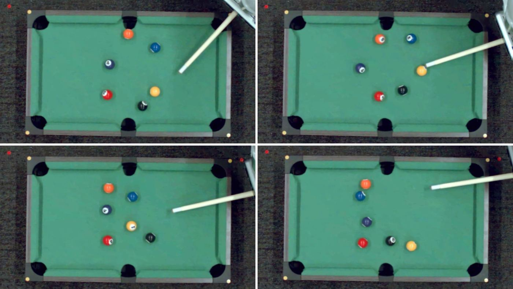
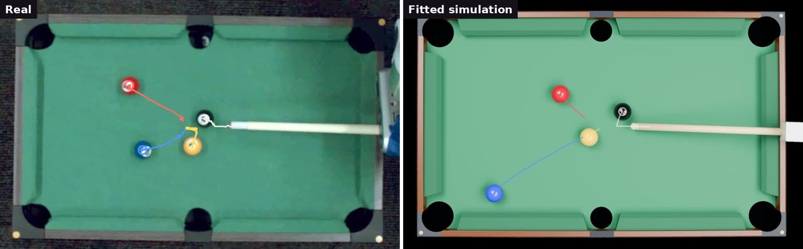

Agent-centric-real-to-sim · 归档于 2026-11-16
CUE
Closing the Dynamics Gap through Self-Directed Robotic Interaction
归档到 Agent-centric real-to-sim：agent 建好 twin 之后，自己设计交互实验去辨识摩擦和回弹，补的正是 real-to-sim 里“物理参数从哪来”这一格。
TL;DR
- Problem
- 相机能把球台和球的位置建进仿真，但摩擦、回弹这类接触动力学不交互就看不到，twin 里学的技能搬不回真机。论文叫它 dynamics gap PDF。
- Idea
- 只给 agent 一句指令、不许人复位：它自己建 MuJoCo 球台、写 ball tracker、用 CMA-ES 拟合参数，并且专挑当前模型解释得最差的地方再打一杆 PDF。
- Result
- 仿真台球、25 个隐藏物理条件、每法最多 30 杆：held-out 球位误差 0.91 cm（Opus 5.5），最强 baseline CEM 3.20 cm，低 72% PDF。真球台的数字只在项目页：10 杆没参与拟合的击球，终点误差 7.2–21.2 mm，没有 baseline 项目页。
Problem
球台看一眼就能重建，球怎么滚、怎么弹却看不出来
Running example · 后面每个 stage 都跟着它走
一张真实的小球台：输入是一句指令 Reconstruct the scene in simulation, then interact with the real table until confident that the simulation explains it. There would be no human reset during your exploration, so make sure to plan ahead. 加相机画面（台上 7 颗球，机械臂握着球杆）→ 想要：一张 MuJoCo 球台，没见过的击球也能预测球停在哪。
指令原文出自论文 §2；球台上的具体数值（如第 2 杆 黄球 0.35 m/s）出自项目页。
flowchart LR IN["例子输入
真球台 + 一句指令"]:::example IN --> A1["只重建，不交互
Agentic RSR、Real2Gym"] A1 --> AX["摩擦、回弹停在默认值
一直 3.25 cm"]:::gap IN --> B1["从离线数据学动力学
Physimcode
RoboSimStudio"] B1 --> BX["不能自己挑交互
论文未跑，无数字"]:::gap IN --> C1["人给参数空间再辨识
CEM、random search"] C1 --> CX["30 杆后几乎没变
3.20 vs 3.25 cm"]:::gap
数字都来自仿真基准（25 个条件，§2）PDF：3.25 cm 是不拟合的模型（Fig. 1 的 Fixed，默认参数），3.20 cm 是 CEM 和 random search 打满 30 杆之后。归类是我的推断：论文只把三者统称 static Real2Sim2Real baseline，我把 unfitted 对到“只重建”，把 CEM 和 random search 对到“人给参数空间”；它们为什么 30 杆后几乎没进步，论文没解释。离线数据这一类论文只在 §1 定性批评，没有跑。
根本问题：摩擦和回弹只在交互里显出来，而“看哪一次交互”、调哪些参数，一直由人或已有数据决定。 这篇的切入点：把“做哪个实验”和“调什么”都交给 agent，让它去打当前模型最解释不了的那一杆。
Related work
| 相关工作 | 解决什么 | 怎么解决 | 和本文的区别 |
|---|---|---|---|
| 同一问题 · 别的解法 | |||
| Agentic Real2Sim2Real（本文所属） Agentic RSR、Real2Gym、Reconstruct-Practice-Go-Real；上真机：HomeBody、VPTwin | 相机画面 → twin → twin 里练 policy → 真机执行 | agent 重建场景，在仿真里迭代 policy | 只重建不交互，摩擦和回弹没着落 → 本文在重建之后加一个自主交互的校准环 |
| 从离线数据恢复动力学 Physimcode、RoboSimStudio | 让仿真的动力学对上真实 | 用已有录像或人的演示来拟合 | 被动：带着人的 embodiment 和动作先验，挑不了要看的交互 → 本文让 agent 自己出杆 |
| System identification，含 active exploration What Went Wrong?、Dynamics as Prompts、ASID | 从交互数据辨识仿真参数 | 在给定的仿真器和参数空间里优化或主动探索 | 仿真器和参数空间由人指定，偏置限制了搜索 → 本文让 agent 自己定调哪些参数、范围多大 |
来源：论文 §1 Introduction & Related Work（全文唯一一段相关工作）PDF，未另行检索。库里已有页面的：Agentic RSR、Real2Gym、VPTwin、RoboSimStudio。Physimcode（arXiv 2610.15722）不是本轮的 PhysCodeGym（2610.17288）。论文对这些工作只有定性比较，没有正面数字。
Level 1 · Big picture
先照着相机建一张球台，再靠自己打球把摩擦和回弹校出来

怎么读这张图
- 后方的机械臂：夹着一根球杆，这是 agent 的“手”。型号论文和项目页正文都没写；页面数据文件的路径里是 franka_station 项目页。
- 中间的小球台：论文叫 small-size pool table，物理参数未知 PDF。这一帧台上 6 颗彩球，没有白色母球：球杆直接打彩球。
- 没有人：指令规定不许人复位，球滚到哪，下一杆就从哪开始 PDF。
flowchart LR I["Input
一句指令 + 相机画面"] --> M["自主校准环
选杆 → 打 → 比 → 改参数"]:::win M --> O["Output
校准过的 MuJoCo 球台"]
- 重建是旧的：blog 自己说这是 agent 已经很擅长的 classic Real2Sim loop 项目页。新东西是后面的校准环。
- 流程不是人写的：tracker、拟合脚本、选杆策略都是 agent 自己搭的（§2 “What the agent discovered”）PDF。
- 产出是仿真，不是 policy：评测量的是 held-out 球位误差，即仿真对没见过的杆预测得多准 PDF。
Level 2 · Stages
5 个 stage，后 4 个循环
flowchart TD S1["1 · Reconstruct + prior
MuJoCo 球台 + 7 颗球"] --> S2["2 · Choose
黄球 0.35 m/s"]:::win S2 --> S3["3 · Strike + track
相机跟出球的轨迹"] S3 --> S4["4 · Compare
终点差 99.3 mm"] S4 --> S5["5 · Update
拟合后 2.3 mm"] S5 -.->|"再挑解释最差的地方"| S2 click S1 href "#stage-1" click S2 href "#stage-2" click S3 href "#stage-3" click S4 href "#stage-4" click S5 href "#stage-5"
点击 stage 展开 Level 3 细节；贯穿全程的“谁做了什么”见 agent 和人的分工。五步的名字取自项目页的流程条（Reconstruct / Choose / Strike / Compare / Update），论文 §2 用两段文字讲同样的内容。
Level 3 · Details
每个 stage 的细节
Stage 1 Reconstruct + prior 初始相机画面 → MuJoCo 球台 + 参数先验
- Why：后面每一次比较都需要一个能跑的仿真。这一步就是传统的 visual Real2Sim。
- How：从初始图像建 MuJoCo 模型：台面、库边、球袋、球杆、球 PDF。
- 靠自己的知识加 web search，决定哪些动力学参数可能重要，给每个定初始范围 PDF。
- 提出第一批通用的试探杆（generic probing shots）PDF。
- 这只是先验，论文原话：plausible, but not yet grounded in this table PDF。
- 未报告：选了哪些参数、范围多大、相机怎么标定。
flowchart LR a["初始相机画面"] --> b["MuJoCo 模型
台、库、袋、杆、球"] b --> c["先验
参数清单 + 初始范围
+ 通用试探杆"]

- 两边的 7 颗球：位置和颜色一一对上，外观这一关过了。
- 看不出来的：这张图说明不了球会滚多远、撞库后剩多少速度。
Running example 在这一步
真球台上 7 颗球 → MuJoCo 里同样摆位的 7 颗球。外观对上了，动力学还是猜的。
Stage 2 Choose 当前模型 + 台面上球的位置 → 下一杆打哪颗球、多快
- Why：不许复位、杆数有限，每一杆都得能分辨“哪组参数对”。
- How：一开始用通用试探杆；有了拟合模型后，改打模型解释得最差的部分 PDF。
- 按想弄清的参数换杆型：cushion shot、contact shot、rolling shot 项目页。
- 先在仿真里推演候选杆：几个候选模型的预测分歧，要大过击球本身的波动，这一杆才值得打 项目页。
- 还要留后路：预判这一杆会不会把球打进袋，或留在够不着的位置 项目页。
- 未报告：候选杆怎么生成、有几个候选模型、分歧和波动怎么算。
flowchart LR a["候选杆
球 × 方向 × 杆速"] --> b["在几个候选模型里
各推演一遍"] b --> c["选：分歧 > 击球波动
不进袋、够得着"]:::win

怎么读这张图
- 左上 Little to learn（紫球 0.15 m/s）：球路几乎只有一条。模型间分歧 0.6 mm，比击球波动 1.5 mm 还小：打了也分不出谁对。
- 右上 Hard to interpret（紫球 0.45 m/s）：球路朝上方中袋散开。分歧 48.5 mm 很大，但击球波动 65.4 mm 更大，还可能进袋（进袋估计 0.44）。
- 左下 Unreachable / unsafe（黑球）：红色 × 落在库边上：要 42° 的杆仰角才越得过库边，planner 只允许 20°。
- 右下 Selected shot（黄球 0.35 m/s）：球路在台面上扇形展开。分歧 20.2 mm 大过波动 11.5 mm，进袋估计 0。页面原话：Differences between models exceed variation from the strike。
四组毫米数和 42°/20° 来自项目页内嵌的选杆数据（decision-details），页面上只显示文字理由 项目页。
真台前 10 杆：杆型一路在换
| 杆 | 时间 | 杆型 | 想探什么 |
|---|---|---|---|
| 1 | 18:40 | Straight roll | 单球直滚：滚动和库边 |
| 2 | 19:14 | Perpendicular roll | 换个垂直方向再滚：把摩擦和台面坡度分开 |
| 3 | 19:42 | Cushion rebound | 斜着撞库：库边吃掉多少能量 |
| 4 | 20:23 | Two-ball collision | 第一次球碰球 |
| 5 | 20:49 | Pocket outcome | 近正碰：回弹和进不进袋 |
| 6 | 21:33 | Near-contact collision | 贴球挤压，敏感的接触区；这杆没用于拟合 |
| 7 | 22:03 | Long roll | 长滚：走到没采过的台面区域 |
| 8 | 22:33 | Rebound and collision | 一杆里既撞库又碰球 |
| 9 | 23:04 | Corner pocket | 贴库打角袋；台面越来越难探索 |
| 10 | 23:31 | Breaking a cluster | 把挤在一起的球挤开，腾出空间；这杆没用于拟合 |
真球台那次自主运行的前 10 杆，取自项目页“How to Actually Solve Real2Sim2Real”里时间线的数据 项目页，右列是页面说明的翻译。10 杆从 18:40 到 23:31，跨 4 h 50 m；页面注明这是录像时间戳的跨度，不是机械臂运动时间之和。
Running example 在这一步
第 2 杆（19:14，上表的 Perpendicular roll）的候选：紫球 0.15 m/s（学不到东西）、紫球 0.45 m/s（难解读）、黑球（够不着）→ 选 黄球 0.35 m/s，分歧 20.2 mm > 波动 11.5 mm。
Stage 3 Strike + track 选好的一杆 → 这一杆里每颗球的真实轨迹
- Why：要和仿真 rollout 比，先得把录像变成球的轨迹。
- How：机械臂握杆直接击打选中的彩球（台上没有白色母球），相机录下 项目页。
- agent 自己写了一个 camera-based ball tracker，把每一杆变成能和仿真对比的轨迹 PDF。
- 最不稳的一环：agent 不停给视觉 pipeline 打补丁，要人提示才肯换思路 PDF。
- 连绿色台面上的离线跟踪都会出错：轨迹从静止的球跳到移动的球杆上 项目页。
- 未报告：相机数量和帧率、tracker 的精度。项目页的素材里有俯视和斜视两个机位 项目页。
flowchart LR a["机械臂击球
黄球 0.35 m/s"] --> b["相机录像"] b --> c["agent 写的 ball tracker
→ 每颗球的轨迹"]
Running example 在这一步
黄球 0.35 m/s 被击出 → tracker 给出它的轨迹：向右滚，途中往下拐，停在右下角袋附近（下一步视频里的白线）。
Stage 4 Compare 真实轨迹 + 同一杆的仿真回放 → 两者差多少、差在哪
- Why：差多少决定要不要改参数，差在哪决定下一杆打什么。
- How：在 MuJoCo 里从观测到的初始状态回放这一杆 PDF。
- 量 sim-to-real trajectory difference；公式未报告 PDF。
- 项目页展示用两个量：trajectory error 和 endpoint error，都对“动了的球”取平均 项目页。
flowchart LR a["真实轨迹
来自 tracker"] --> c["轨迹差
终点差 99.3 mm"] b["仿真回放
同一初始状态"] --> c
怎么读这段视频
- 上排 Earlier model：红线（仿真）停在台面右侧中部；白线（真球）一路往下拐到右下角袋口。终点差 99.3 mm。
- 下排 Updated model：红线和白线重合，终点差 2.3 mm。这是在这一杆上拟合之后的结果，页面数据写明 not a held-out prediction。
Running example 在这一步
Earlier model 预测黄球停在台面右侧中部；真球拐到了右下角袋附近 → 终点差 99.3 mm。
推断：往下拐像台面坡度造成的。这一杆的杆型 Perpendicular roll 本来就是为了把摩擦和坡度分开，项目页另说 agent 后来推断台面不平；页面没把两件事直接连起来。
Stage 5 Update 录下的所有杆 + 轨迹差 → 新的仿真参数（必要时改仿真器）
- Why：让仿真解释得了已经看到的每一次交互。
- How：并行开多个 MuJoCo 实例，每个从某一杆观测到的初始状态回放 PDF。
- 用 CMA-ES 调仿真参数，最小化 sim-to-real 轨迹差 PDF。
- 调参不够就改仿真器：agent 推断台面不平，给仿真加了台布曲率（cloth curvature），拟合变好 项目页。
- 回到 Stage 2，直到 agent 认为仿真解释得了这张台（指令里的 until confident）。停止判据未报告。
flowchart LR a["录下的每一杆
初始状态 + 真实轨迹"] --> b["并行 MuJoCo 回放
CMA-ES 最小化轨迹差"] b --> c["新参数
99.3 → 2.3 mm"]
Running example 在这一步
第 2 杆拟合后，这一杆的终点差从 99.3 mm 降到 2.3 mm（在本杆上拟合）。真台评测用的模型冻结在 69 杆的拟合上 项目页。
贯穿全程 agent 和人的分工 一句指令 → 一整条自己搭的 sim-to-real pipeline
- Why：论文说真台上是 zero human involvement，要看清这句话的边界。
- 人给的：一句指令；探索期间不监督，只在有安全隐患时干预 PDF。
- agent 搭的：重建、参数清单和范围、tracker、CMA-ES 拟合、选杆 PDF。
- 人实际还补了：提示它重新考虑视觉方案；指导它在长实验里怎么花时间和算力 PDF。
- 没有复位的代价：第一次运行里它把剩下的球打到库边和角落，17 杆后被迫停止 项目页。
- 模型：CUE (Opus 5.5) 和 CUE (Astra 6.1) 两个版本，真台用 Opus 5.5 PDF。论文只说 coding agent，没写 harness；项目页的演示终端标着 Claude Code，并注明是示意 项目页。
flowchart LR a["人
一句指令
有危险才干预"] --> b["agent 自己搭
tracker、拟合、选杆"]:::win b --> c["人还得补
提示换视觉方案
指导时间分配"]:::gap
Running example 在这一步
真球台一共记录了 159 杆，首尾跨 35 h 10 m 项目页。干预和提示的次数未报告。
Recap：例子覆盖了论文的哪些 idea
| 论文里的 idea | 例子里在哪体现 |
|---|---|
| Dynamics gap：重建看不到摩擦和回弹 | Problem：第 3 杆，页面标 Simulation without CUE 的仿真里紫球多滚一大段（121.9 mm） |
| 一句指令、no human reset、plan ahead | Running example 的指令；分工一栏：第一次运行 17 杆后被迫停止 |
| Reconstruct and form a prior | Stage 1：7 颗球的 MuJoCo 球台，参数只是先验 |
| 打模型解释得最差的地方 | Stage 2：四个候选里选黄球 0.35 m/s（分歧 20.2 > 波动 11.5 mm）；前 10 杆的杆型一路在换 |
| agent 自己建 camera-based ball tracker | Stage 3：黄球的轨迹；也是最不稳的一环 |
| CMA-ES + 并行 MuJoCo 回放拟合参数 | Stage 4–5：终点差 99.3 → 2.3 mm（在这一杆上拟合） |
| 调参不够就改仿真器 | Stage 5：agent 推断台面不平，加了 cloth curvature（黄球往下拐，见 Stage 4 的推断） |
| 主结果：held-out 误差低 72% | Results E1（仿真 benchmark，不是这张真台） |
| 真机部署和三条教训 | Results E2、Limits：开球那一杆，拟合后的仿真里蓝球滚得太远 |
Results
仿真里证明了“自己做实验”更准；真台能跑，但只有示例数字
顺序同论文 §2：E1 在仿真里量统计表现 → E2 搬到真球台。比的是预测误差（球位差多少），不是任务成功率，也不是耗时。
E130 杆以内，agent 校准出的仿真比固定参数和参数搜索准多少？§2 Experiments · Fig. 1 · PDF

怎么读这张图
- 横轴 Real interactions：已经打了几杆（0–30）。纵轴 Test error：没参与拟合的杆上，预测球位和“真实”差几厘米。
- 黑色虚线 Fixed：不拟合、用默认参数，一直是 3.25 cm。红 CEM、橙 Random：从 Fixed 的位置出发，在它上方上下晃，打满 30 杆回到 3.20 cm。
- 蓝 CUE (Astra 6.1)、紫 CUE (Opus 5.5) 的左端：k = 0 时两条线都在 baseline 上方：agent 自己的先验一开始比默认参数还差。这两个起点值论文没写。
- 两条 CUE 线的走势：头几杆急降，k = 3 的点已在所有 baseline 下方，之后慢慢走平；右端就是正文的 0.91 和 1.32 cm。
| 方法 | 30 杆后 held-out 球位误差 | 相对最强 baseline（CEM） |
|---|---|---|
| CUE (Opus 5.5) | 0.91 cm | 低 72% |
| CUE (Astra 6.1) | 1.32 cm | 低 59% |
| CEM | 3.20 cm | — |
| Random search | 3.20 cm | — |
| Unfitted model（Fixed） | 3.25 cm | — |
由 §2 正文的数字整理，论文没有这张表 PDF。项目页 blog 的 Evaluations 一节，Figure 1 柱状图是同样 5 个数，Figure 2 就是这张曲线图，和 PDF 一致 项目页。
- 说明什么
- 预测更准，而且几杆就见效。30 杆后 0.91 cm（Opus 5.5）和 1.32 cm（Astra 6.1），比 CEM 的 3.20 cm 低 72% 和 59%；random search 3.20 cm，unfitted 3.25 cm。
- 在故事里
- 全文唯一的定量证据：自己选交互加自己拟合，比不拟合、比只搜参数都更能预测没见过的杆。
- 指标
- Held-out ball-position error（cm），25 个条件取均值。论文没给公式，也没说 held-out 集多大、量的是终点还是整条轨迹；每个条件跑几个 seed 未报告。
- 怎么评测
- 一个 MuJoCo 台球仿真器当“真实世界”，物理参数对各方法隐藏；25 个条件 = 5 种摆球 × 5 组物理参数；每法最多 30 杆。
- CUE 从 agent 自己的初始假设出发，baseline 从默认仿真参数出发。
- CEM 和 random search 搜哪些参数、杆怎么选：未报告。它们为什么 30 杆后几乎没比 unfitted 好，论文没解释。
- 我的判断：被拟合的“真实世界”本身就是 MuJoCo，模型表达不了的效应在这里不会出现；这组数因此不检验真台上卡住的那类问题（E2、Limits）。
E2搬到真球台，拟合后的仿真还能预测没见过的杆吗？§2 末段 · 项目页
论文正文只有一句：用 small-size pool table、CUE (Opus 5.5)，结果见项目页 PDF。下面的数字全部来自项目页 Prediction accuracy 的数据 项目页。
| Shot | 目标球 | 杆速 (m/s) | 轨迹误差 (mm) | 终点误差 (mm) |
|---|---|---|---|---|
| 01 | Purple | 0.109 | 6.0 | 8.1 |
| 02 | Yellow | 0.159 | 9.2 | 10.2 |
| 03 | Blue | 0.172 | 9.0 | 7.6 |
| 04 | Yellow | 0.233 | 14.8 | 11.8 |
| 05 | Red | 0.136 | 14.8 | 19.0 |
| 06 | Purple | 0.137 | 7.7 | 9.3 |
| 07 | Black | 0.223 | 12.5 | 14.2 |
| 08 | Yellow | 0.202 | 7.3 | 7.2 |
| 09 | Yellow | 0.223 | 12.2 | 14.7 |
| 10 | Blue | 0.278 | 17.1 | 21.2 |
项目页的 10 杆逐杆数据，整理成表。

- 说明什么
- 能跑，误差在厘米级，但只是示例。10 杆没参与拟合的击球：轨迹误差 6.0–17.1 mm，终点误差 7.2–21.2 mm。页面没给平均值，也没有对照。
- 在故事里
- 说明这套流程离开仿真也能跑完，同时引出 Limits 里的三条教训。
- 指标
- Trajectory error 和 endpoint error（mm），对动了的球取平均；仿真跟着录下的球杆运动走（页面数据的说明）。
- 怎么评测
- 小号真球台，CUE (Opus 5.5)；模型冻结在 69 杆的拟合上，这 10 杆是之后录的，不在拟合集里。
- 页面写明这是 Illustrative shots，不是论文的 25 条件 benchmark；数据里的原始编号是 1–8、11、12，第 9、10 号没放出来。
- 没有 baseline 在这 10 杆上的数字。页面标 Simulation without CUE 的只有两个例子：cushion 那杆紫球终点差 121.9 mm；collision 那杆真球进袋、仿真里球留在台上（都是 Problem 里说的“这一杆之前的模型”）。
- 推字母的 demo 没有量化。
Limits
局限和开放问题

- 模型外的效应调不出来：球的小瑕疵、台面局部起伏相机重建不了；每个都显式建模就得不停扩仿真器。作者给的方向是物理仿真加数据驱动的修正 PDF。上图是一个例子 项目页。
- agent 搭视觉 pipeline 不可靠：不停打补丁，要人提示才换思路 PDF。
- agent 不会规划长实验：时间和算力怎么花要人指导 PDF；第一次运行把剩下的球打到库边和角落，17 杆后被迫停止 项目页。
- “zero human involvement” 和上两条有出入（我的判断）：论文 §1 用了这个说法，§2 又写了要人提示和指导。
- 定量证据只在仿真对仿真：MuJoCo 拟合 MuJoCo。真台没有 baseline 对比，论文正文没有真机数字。
- 只有台球一个任务：作者自己说这里“重建简单”。换到抓取、铰接物体会怎样，没有证据。
- PDF 的一处排版问题：§2 末尾第 2、3 条 lesson 的小标题和正文对调了，项目页和 blog 的配对是对的，本页按后者写。
PDF 和项目页都没报告
- 方法：agent 选了哪些动力学参数、初始范围多大；轨迹差的公式；停止判据（指令里的 until confident）；候选杆怎么生成。
- 仿真实验：held-out 集多大、量终点还是整条轨迹；每个条件几个 seed；CEM 和 random search 搜哪些参数、杆怎么选。
- 系统：agent harness 和工具（PDF 只说 coding agent，项目页的终端是示意）；机械臂型号（只在数据路径里出现 franka_station）；相机数量、帧率、标定；代码未放出（Code link forthcoming）。
- 成本和人：token、算力、agent 的思考时间；人干预、提示了几次。项目页只给了真台采集的墙钟时间：159 杆，首尾跨 35 h 10 m。
- 真台：任何 baseline；推 C、O、R、L 的成功率或误差。
For Agent-centric real-to-sim
对我们有什么用
- r2s-lite 的质量和摩擦：我们只有 DROID 录像，出不了杆，但选杆的判据可以反着用：在几组候选参数下回放同一集，只拿预测分歧大过观测噪声的片段来拟合和验证；分歧小的片段说明不了参数对不对。
- 拟合的证据和验证的证据分开：CUE 报的是没参与拟合的杆；拟合过的那杆 2.3 mm，页面自己标明不算预测。锅盖那集第 9 次过了宽松规则而场景是错的，是同一个问题：repair 用过的证据不能再当通过的证据。
- 测量工具由 harness 给，并且留后路：CUE 的 agent 现写 tracker 反复出错，还把球打进死局。r2s-lite 的 repair loop、real2sim-anything-indoor 和 WorldClaw 的 skill 里，跟踪和对齐应是验证过的现成工具；多轮修改要保留能回退的状态。